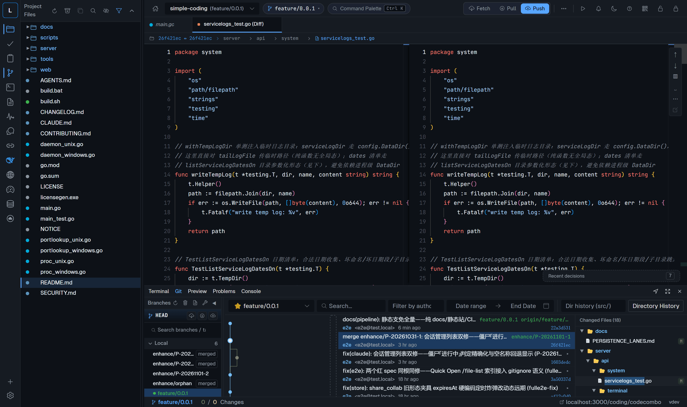
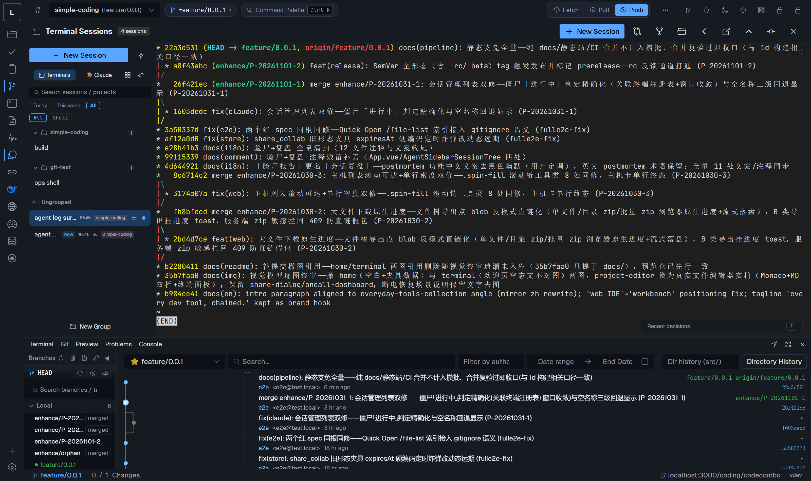
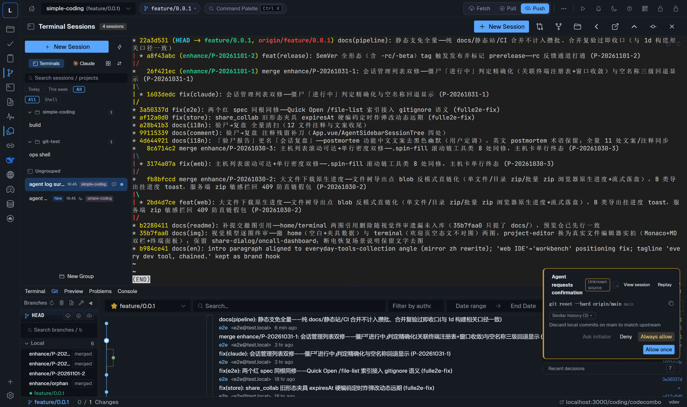
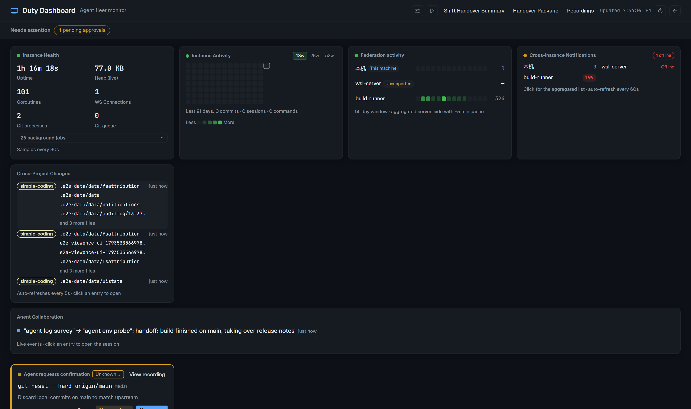
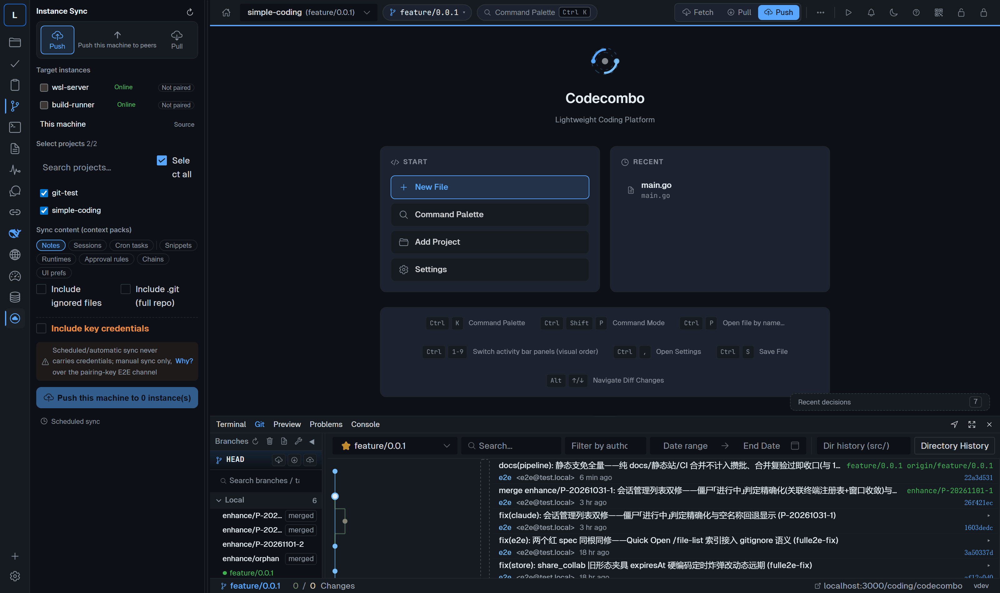
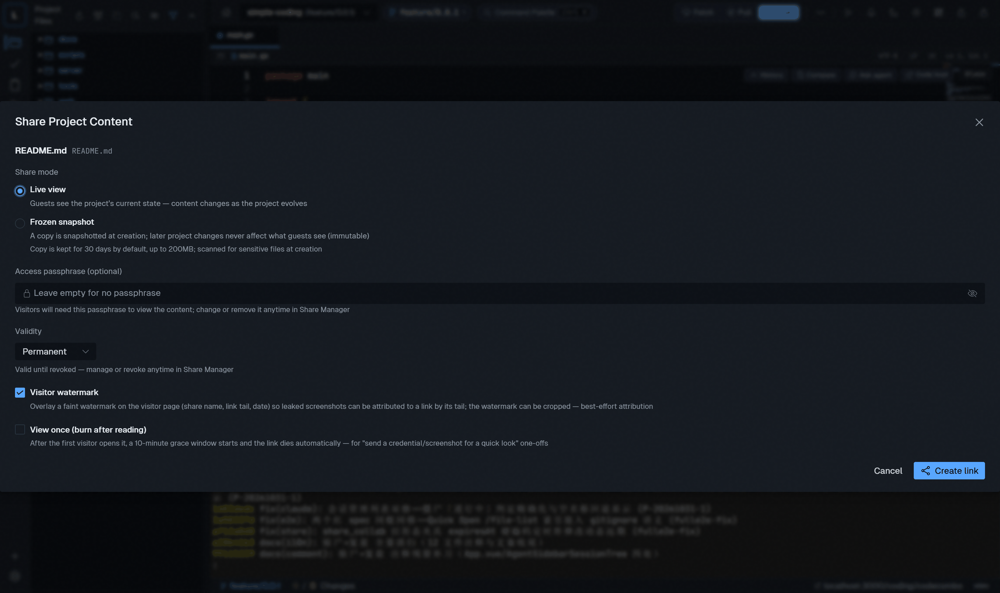

Features功能全览
The whole toolbox, module by module — what each one is for, where to find it in the workbench, and which guide covers it in depth. Install and first steps live in Getting started; this page maps the rest. 整个工具箱逐模块过一遍——它是干什么的、在工作台哪里找到它、 哪篇指南把它讲透。安装与上手步骤在快速上手， 本页负责其余全部。
All modules at a glance模块总览
Twelve modules, one per section below. Click a row to jump to it; the “deep dive” column points at the long-form guide when one exists. 十二个模块，对应下文十二节。点行内链接直达对应小节； 「深入指南」列指向已成文的长文（若有）。
| Module模块 | In one line一句话 | Deep dive深入指南 |
|---|---|---|
| Git workbenchGit 工作台 | Visual Git from hunk-level staging to interactive rebase.从 hunk 级暂存到交互式 rebase 的可视化 Git。 | — |
| Web terminalWeb 终端 | Real PTYs with optional tmux persistence and output replay.真实 PTY，可选 tmux 持久化与输出回放。 | Getting started快速上手 |
| Remote machines远程管理 | SSH hosts, remote terminals, one-click deployment pipelines.SSH 主机、远程终端、一键部署流水线。 | — |
| Agent sessions终端会话管理 | Claude / Codex / dsh sessions as real PTYs, driven from chat.claude / codex / dsh 会话即真实 PTY，聊天直接驱动。 | Getting started快速上手 |
| Approval center审批中心 | Risky agent actions come back as approval cards, not blank checks.高危动作以审批卡回流，不是空白支票。 | Getting started快速上手 |
| Notes笔记库 | One notepad shared by you and your agents, across projects.你与智能体共享的笔记库，跨项目一份。 | Getting started快速上手 |
| TODO listTODO 清单 | Code-comment TODO / FIXME / HACK markers, aggregated into one board.代码注释里的 TODO / FIXME / HACK，聚合一块看板。 | — |
| Environment profile环境画像 | A read-only résumé per project: ports, sentinels, deploy targets.每个项目的只读简历：端口、哨兵、部署目标。 | — |
| On-call dashboard值班大屏 | One screen for instance health, activity and stalled sessions.实例健康、活动热力、停滞会话一屏总览。 | — |
| Instance sync多实例同步 | Manage many instances from one; migrate a machine as one .scpkg.一屏管理多实例；整机迁移一个 .scpkg。 | — |
| Sharing links分享中心 | One-click links for files, folders, snippets and live terminals.文件、文件夹、片段、实时终端，一键成链。 | Getting started快速上手 |
| dsh integrationdsh 集成 | The dsh Web UI embedded in the workbench, with version management.dsh Web UI 嵌入工作台，附带版本管理。 | — |
Not listed as modules: the global lock, secret encryption and audit log (FAQ · Lock & remote access), self-update (FAQ · Upgrading), and language & themes — see also in the box at the end. 不单列成模块的：全局锁、敏感值加密与审计日志 （常见问题 · 锁与远程访问）、自更新 （常见问题 · 升级路径）以及语言与主题——见文末 还有这些。
1 · Git workbench1 · Git 工作台
Visual Git for people who don't want to memorize flags. Stage down to the hunk, read three-way diffs, resolve conflicts, and run an interactive rebase by dragging commits — the workbench shows the merge preview before you commit to it. 给不想背参数的人的可视化 Git：按 hunk 暂存、读三方 diff、解冲突， 拖拽提交即完成交互式 rebase——动手之前，工作台先把合并预览摆给你看。
- Everyday Git, visual: hunk-level staging, changelists and shelves, commit graph with cherry-pick / squash / extract, reflog, patch export/import. 日常 Git 全可视化：hunk 级暂存、changelist 与 shelf、提交图上 cherry-pick / squash / 摘取提交、reflog、补丁导出导入。
- Advanced repo shapes: worktrees, submodules, LFS and GPG-signed commits are first-class, not add-ons. 高级仓库形态一等公民：worktree、子模块、LFS、GPG 签名提交 都是原生支持，不是外挂。
- Where to find it: the Git panel from the activity bar (docked as a bottom tab too); staging lives in the sidebar commit panel. 入口：活动栏的 Git 图标打开 Git 面板（也可停靠为底部标签）； 暂存走侧栏的提交面板。

2 · Web terminal2 · Web 终端
A real terminal in the browser tab you already have open — real PTYs (ConPTY on Windows, pty on Unix), split panes and floating windows, bookmarks, command blocks, image paste upload. Turn on tmux persistence and terminals survive restarts with their full scrollback replayable. 就在你开着的浏览器标签里给一个真终端——真实 PTY（Windows 走 ConPTY，Unix 走 pty）、分屏与悬浮窗、书签、命令块、图片粘贴上传。打开 tmux 持久化后，终端跨重启存活，全部输出可回放。
Where to find it: the terminal icon in the activity bar, or the terminal bottom tab. Persistence and restart recovery are covered step by step in Getting started · Restart & restore. 入口：活动栏的终端图标，或底部「终端」标签。持久化与重启恢复的 分步说明见快速上手 · 重启与恢复。
3 · Remote machines3 · 远程管理
Keep your other boxes inside the same workbench. Manage SSH hosts with encrypted credentials, open remote terminals (remote tmux included), forward ports, and watch live deploy logs. 把你的其他机器装进同一个工作台：托管 SSH 主机（凭据加密存储）、 开远程终端（含远程 tmux）、转发端口、盯部署日志实时输出。
Where to find it: the globe icon in the activity bar opens the remote console; add a host and it becomes a first-class target for terminals and deployments. The one-click deployment pipeline (bootstrap → runtime → systemd) is documented for operators in the Linux deploy guide; reverse-tunnel reach-in is covered in the ops-oriented remote access notes. 入口：活动栏的地球图标打开远程管理；添加主机后，它即可作为终端 与部署的一等目标。一键部署流水线（bootstrap → runtime → systemd）的运维向说明在 Linux 部署指南； SSH 反向隧道接入见 远程接入说明。
4 · Agent sessions4 · 终端会话管理
Run claude / codex / dsh as managed sessions — starting one needs no project, and any project can host many. Sessions auto-name themselves after their first task, organize into custom groups, and are restored as they were after power loss or reboot. Every session is a real PTY: refresh the page and replay the full scrollback. 把 claude / codex / dsh 当受管会话跑——开会话不需要任何项目，每个 项目也可以同时跑多个。会话以首个任务自动命名、归入自定义分组，断电重启后原样恢复。 每个会话都是真实 PTY：刷新页面即可回放全部输出。
- Fleet features: side-by-side runs of two agents on the same task, continuation chains, scheduled agent jobs, reusable runbooks, and fleet execution across many sessions. 机群能力：两个智能体同题并跑、接续链、定时任务、可复用 运行手册，以及跨多会话的编队执行。
-
Agents drive the workbench itself: the ops channel gives
them a structured API over downloads, clipboard, open-at-line, preview links and
cross-device notifications, with a rendered handbook (
/ops-manual) served by your own instance — its knowledge matches your running version. 智能体驱动工作台本身：ops 通道以结构化 API 提供下载、剪贴板、 定位打开、预览链接与跨设备通知，并附渲染版手册（/ops-manual）—— 由你自己的实例提供，手册与运行版本永远一致。 - Where to find it: the chat-bubbles icon in the activity bar opens session management; a full walkthrough is in Getting started · Let an agent set it up. 入口：活动栏的对话气泡图标打开终端会话管理；完整走查见 快速上手 · 智能体代办。

5 · Approval center5 · 审批中心
Agents don't get a blank check. When a high-risk command or a mass file replacement comes up, it returns as an approval card with a live terminal recording — watch what the agent did, then approve, deny, or edit per item. Sensitive values (tokens, passwords, cloud keys) are redacted on the way out. 智能体拿不到空白支票。高危命令或批量文件替换出现时，会以 审批卡回流，附实时终端录像——先看智能体做了什么，再逐条允许、拒绝或改写。 敏感值（令牌、密码、云密钥）在回流路上就已脱敏。
Where to find it: approval cards come to you in the session flow; cards waiting for judgement are also visible on the on-call dashboard, and the keyboard-shortcut cheat sheet can filter by approval scope. Ground rules for what triggers a card are in Getting started. 入口：审批卡在会话流中回流；等待裁决的卡同样出现在 值班大屏，键盘快捷键备忘单可按「审批等待」作用域筛选。 什么动作会触发审批卡的地面规则见 快速上手。

6 · Notes6 · 笔记库
One notepad you share with your agents — a project-independent notes library. Agents read and write the same library over the ops API, depositing handoff notes so the next session picks up where the last one left off. Searchable, always one panel away. 你与智能体共享的便签层——一个项目无关的笔记库。智能体经 ops API 读写同一个库，交接笔记留在里面，下一个会话从上一个的断点继续。可搜索、随手可达。
Where to find it: the note icon in the activity bar opens the notes view. The handoff workflow (ask an agent to deposit a note, then let the next session pick it up) is in Getting started · Share & notes. 入口：活动栏的笔记图标打开笔记视图。交接工作流（让智能体把 交接笔记存进库里，下个会话接着干）见 快速上手 · 分享与笔记。
7 · TODO list7 · TODO 清单
The IOU list humans leave for the next round of agent work: code-comment
TODO / FIXME / XXX / HACK markers
aggregated into one board. Instead of telling the agent what to fix next, point it
at the board.
人类留给下一轮智能体工作的赊账清单：代码注释里的
TODO / FIXME / XXX / HACK 标记
聚合成一块看板。不用逐条告诉智能体要修什么——把它指到看板上。
Where to find it: the clipboard icon in the activity bar opens the TODO panel for the current project. 入口：活动栏的剪贴板图标打开当前项目的 TODO 面板。
8 · Environment profile8 · 环境画像
A read-only “environment résumé” per project, so a newcomer — human or agent — stops guessing: dev ports observed in terminals or reported by agents, visible output-sentinel rules, and deploy target hosts, on one sidebar page. 每个项目的只读「环境简历」，让新来者——无论人还是智能体——不再 猜：终端观测到或智能体上报的 dev 端口、可见的输出哨兵规则、部署目标主机， 一页看全。
Where to find it: the server icon in the activity bar opens the profile; it fills itself in as work happens, no form to maintain. 入口：活动栏的服务器图标打开环境画像；画像随工作发生自动充实， 无表单要维护。
9 · On-call dashboard9 · 值班大屏
One screen for “what is my box doing right now”: instance health (memory / goroutines / git process pressure), a 52-week activity heatmap, a live change stream, agent collaboration flow, stalled-session triage — and approval cards waiting for judgement. 一块屏回答「我的机器现在在干嘛」：实例健康（内存 / goroutine / git 进程压力）、52 周活动热力图、实时变更流、智能体协作流、停滞会话分诊—— 以及等待裁决的审批卡。
- Project dashboard: a per-project home in the activity bar — git status, sessions, problems and recent activity on four cards, with direct wiring into each. 项目仪表盘：活动栏里的项目级常态首页——git 状态、会话、 问题、近期活动四卡一屏，各自可直达。
- Change stream: the same cross-project timeline as an in-workbench panel — “what just changed anywhere”, beyond the dashboard card. 跨项目变更流：同一条跨项目时间线也有工作台内入口——大屏卡 之外的「哪里刚变了」。
- Where to find it: the dashboard button on the home toolbar opens the on-call screen; the change-stream panel sits in the activity bar. 入口：首页工具条的「值班大屏」按钮打开大屏；变更流面板在 活动栏。

10 · Instance sync10 · 多实例同步
One Codecombo instance can manage many others — local or remote —
through a central proxy: instance switching with a health overview, terminal and
panel take-over of a remote instance, instance-to-instance sync of projects and
contexts, and one-shot machine migration (export/import an encrypted
.scpkg package with credentials, settings and project contexts).
一个 Codecombo 实例经中心代理管理其他多个实例——本地或远程皆可：
实例切换带健康总览、远程实例的终端与面板接管、项目与上下文的实例间同步，
以及一次性整机迁移（导出/导入加密 .scpkg 包——凭据、设置与项目
上下文随包走）。
Where to find it: the cloud icon in the activity bar opens the sync center; contexts on both sides cover snippets, runtimes, approval rules, continuation chains and UI preferences. 入口：活动栏的云环图标打开同步中心；两侧可同步的上下文覆盖 片段、运行时、审批规则、接续链与界面偏好。

11 · Sharing links11 · 分享中心
Share a file, a folder, a text snippet, or a live terminal with visitors via one-click links — TTL, password, view-once and frozen-snapshot are all one toggle away, and you can revoke any link at any moment. Visitors need no account; live terminal shares are read-only and masked. 把文件、文件夹、文本片段或实时终端一键成链分享给访客—— TTL、口令、阅后即焚与冻结快照随手可开，任何链接随时可吊销。访客无需账号； 实时终端分享为只读且经遮蔽处理。
Where to find it: right-click any file → Share for a one-click link; the link icon in the activity bar opens the share manager where every link you've issued can be reviewed and revoked. The day-trip walkthrough is in Getting started · Share & notes. 入口：右键任意文件 → 分享即得一键链接；活动栏的链接 图标打开分享管理，你发过的每条链接都可查看与吊销。一日游走查见 快速上手 · 分享与笔记。

12 · dsh integration12 · dsh 集成
Embed the dsh (DeepSeek Harness) Web UI over a loopback proxy, so its console lives inside the workbench next to everything else. Version management for dsh ships with it: upgrade, rollback, and a version changelog to read before you move. 经回环代理嵌入 dsh（DeepSeek Harness）的 Web UI，让它的控制台 与工作台其余一切同处一室。dsh 版本管理随附：升级、回退，以及升级前可读的 版本变更日志。
Where to find it: the dsh icon in the activity bar opens the embedded console; version management is its own subsection inside, current version first. 入口：活动栏的 dsh 图标打开嵌入控制台；版本管理是其中的独立 子区，当前版本置顶。
Also in the box还有这些
- Security foundation — global lock with idle auto-lock, AES-256 encryption for all stored secrets, per-IP rate limiting, audit log with CSV export. Lock and remote-access posture: FAQ · Lock & remote access. 安全底座——全局锁加闲置自动上锁、AES-256 加密全部落盘敏感值、 按 IP 限流、审计日志可导出 CSV。锁与远程访问口径： 常见问题 · 锁与远程访问。
- Self-update — GitHub-release-based update checks with automatic rollback; central instances can cache and forward binaries to child instances. Which upgrade path is yours: FAQ · Upgrading. 自更新——基于 GitHub Release 的更新检查加失败自动回滚；中心实例 可缓存并转发二进制给子实例。你该走哪条升级路： 常见问题 · 升级路径。
- Language & themes — English / 简体中文 UI, four built-in themes (Dark / Light / One Dark / Dracula). One toggle each in settings; see the product home for the visual tour. 语言与主题——英文 / 简体中文界面，四款内置主题（Dark / Light / One Dark / Dracula），设置里各一处开关；视觉导览见 官网首页。
Where to next: Getting started walks the first ten minutes, and the FAQ covers ports, data directory, upgrade paths and the usual error messages. 接下来去哪：快速上手带你走完最初的 十分钟，常见问题覆盖端口、数据目录、升级路径与常见报错。